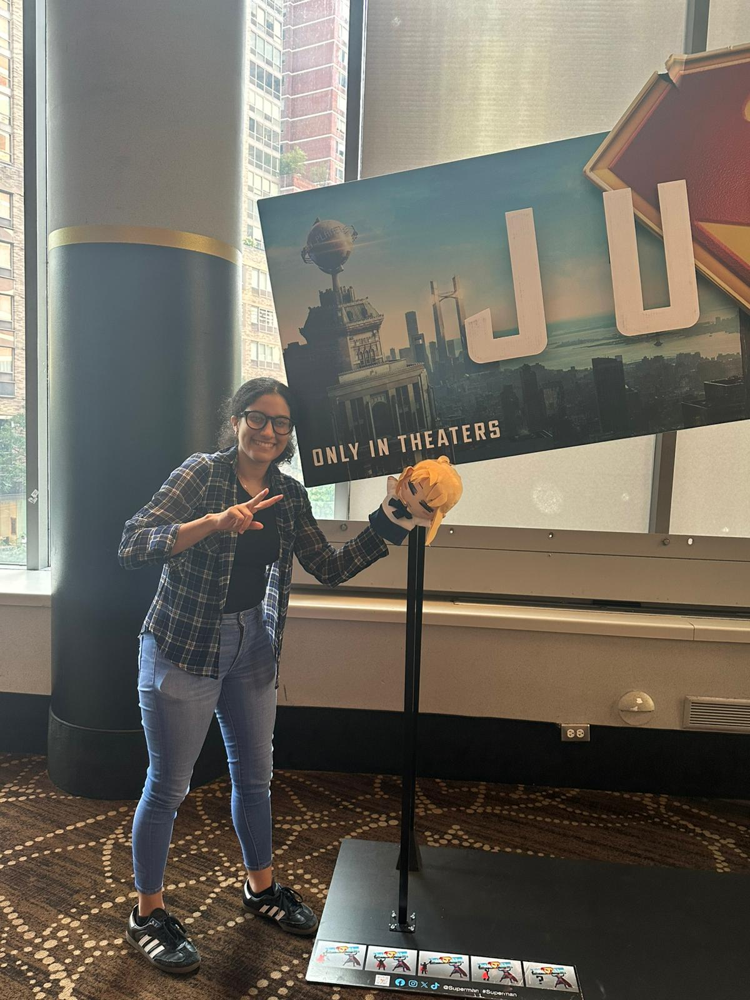

Hello! I am Salma and I don't describe myself as an artist but someone who simply loves art in many forms. From the art of storytelling in the words of a novel to all the work that goes into a video game. Most of what I make comes from curiosity and the desire to experiment with different materials, so I am self-teaching myself how to draw at the moment with different books. I practice both digital art and traditional with pen and paper, I specifically use pen so I don't try to be perfectionest, spending more time correcting tha actually drawing. Creating for me is a form of homage to things and people that I love. The first name that comes to mind as one of my greatest inspirations is Ken Sugimori, the original character designer for Pokémon, as it is one of the franchises that has affected me the most in my life.
If I see a chance to learn something new I will take it, and I am always open to learning new things. You never knew when something you learn will come in handy later on. So I hope I can stay disciplined and keep learning new things.
